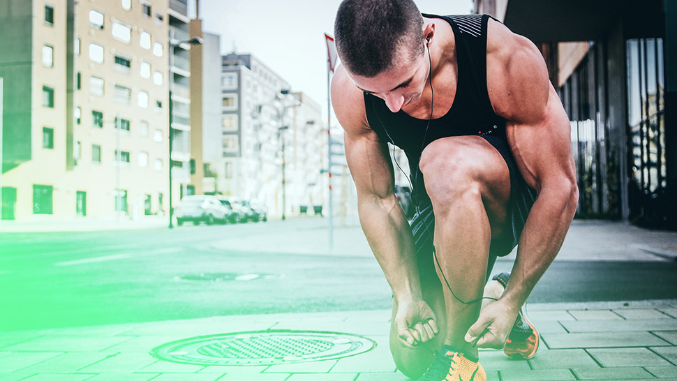

Say hello to sport area!
First of all, I am really glad you came to this page. Congratulations! This means that you care about your health condition. Before you will run into my articles, you should know who I am and why you should trust my words.
My name is Adam Adrian-Claudiu and I've been practiced sport all my life till now. At the age of 3 I felt in love with football and one year after I joined into FC Otelul Galati team, the best football club in my city ( at that time ). All those trainings formed my lifestyle and my passion at the same time. After 11 years, I got injured very bad during a match and that forced me to decide between a football career and further studies. I felt like I can't maximize my potential in this field, so I picked the way that ensure my future.
Right after first week, my body pushed me to this habbit. My blood wants to move and to feel the fresh air again. So that's why I started this adventure: 4 years of workouts from scratch. I let you to discover the story behind my evolution and apply these hints on your way.